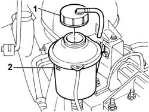

0010T71 power steering fluid check level and top up if necessary
- Path
- Procedures > 00 MAINTENANCE > 0010 NEW VEHICLES AND MAINTENANCE > 0010T VEHICLE FLUIDS > 0010T71 power steering fluid check level and top up if necessary
- Kind
- repair procedure (removal / refitting; the operation number is the code)
- Applies to
- all engines; all production periods
- Interactive page
- https://sloeber94.github.io/elrnDB-fDbl/en/#/2584132
Applies to: engines: 1.2 8v, 1.6 16v, 1.3 JTD 16V, 1.9 JTD 8V, 1.9 DIESEL; all production periods
Open the bonnet.
1. Undo the cap and remove it.
2. Check that the level of the fluid in the power assisted steering box is between the MIN and MAX marks on the reservoir.
If necessary, top up to the MAX mark using the appropirate fluid.
Type | Component | Description | Qty. | |
|---|---|---|---|---|
- | Oil | POWER STEERING HYDRAULIC SYSTEM | TUTELA GI/A | - |
The use of TUTELA HP 20 power assisted steering fluid is recommended for use in particularly harsh climatic conditions
Type | Component | Description | Qty. | |
|---|---|---|---|---|
- | Oil | ENGINE COOLING CIRCUIT | TUTELA HP 20 | - |

Applies to: engines: 1.2 8v, 1.6 16v, 1.3 JTD 16V, 1.9 JTD 8V, 1.9 DIESEL; all production periods
Tighten the reservoir cap.
Close the bonnet.
Applies to: engines: 1.4 8v; production: da 12/03; only with equipment: MY 2005
Open the bonnet.
1. Undo the cap and remove it.
2. Check that the level of the fluid in the power assisted steering box is between the MIN and MAX marks on the reservoir.
If necessary, top up to the MAX mark using the appropirate fluid.
Type | Component | Description | Qty. | |
|---|---|---|---|---|
- | Oil | POWER STEERING HYDRAULIC SYSTEM | TUTELA GI/A | - |
The use of TUTELA HP 20 power assisted steering fluid is recommended for use in particularly harsh climatic conditions
Type | Component | Description | Qty. | |
|---|---|---|---|---|
- | Oil | ENGINE COOLING CIRCUIT | TUTELA HP 20 | 1.3 |
Applies to: engines: 1.4 8v; production: da 12/03; only with equipment: MY 2005
Tighten the reservoir cap.
Close the bonnet.
Topics that link to this page (14)
- 0010K20 20,000km service coupon, emission control version
- 0010K40 40,000km service coupon, emission control versions
- 0010K60 60,000km service coupon - emission control versions
- 0010K80 80,000km service coupon - emission control versions
- 0010M01 100,000km service coupon, emission control versions
- 0010M20 120,000km service coupon, emission control versions
- 0010M40 140,000km service coupon - emission control versions
- 0010M60 160,000km service coupon - emission control versions
- 0010M80 180,000km service coupon - emission control versions
- 1004B10 POWER UNIT WITH MANUAL GEARBOX - R.R
- 1016C10 cylinder head - r + r and replace gasket
- 4130B20 power steering pump r r
- 4130B30 POWER STEERING PUMP BRACKET OR SUPPORT - R.R.
- 4130B32 POWER STEERING PUMP SUPPORT - R R